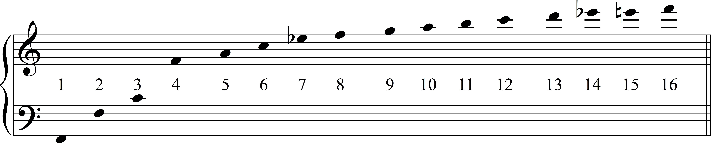
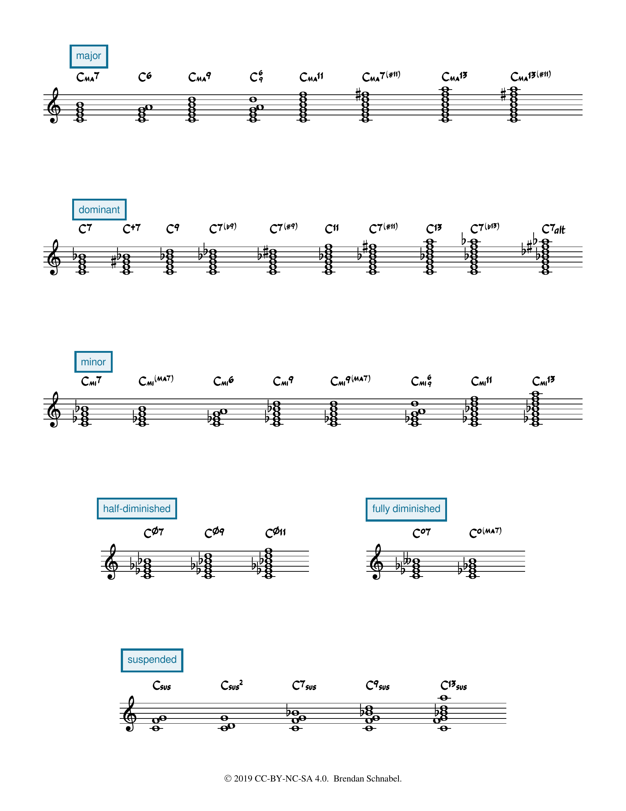

Open Music Theory：繁體中文版
爵士和弦配置
本單元到目前為止，你寫的和弦都還是未作聲部配置的形式。這種寫法有助於理解和聲概念，但實際演奏時，通常不會直接彈出一大疊三度堆成的音。本章說明如何以符合爵士風格的方式配置這些和聲。我們會以左手始終彈根音的配置為主，讓和聲保持清楚；不過，實際合奏時，鍵盤常會省略根音，因為貝斯手已經負責演奏它。
查看英文原文
Key Takeaways
- Space chords to mimic the spacing of the harmonic series: use large, wide intervals in lower registers, and smaller, closer intervals in upper registers.
- Extensions should be voiced in the higher voices.
- If you double a note, usually double either the bass or the root of the chord.
- Omitting the fifth of the chord is almost always perfectly acceptable.
- Use smooth or “lazy” voice leading: move each voice as little as possible between chords to achieve a smooth, easy-to-perform sound. A common smooth voice-leading schema in jazz is to lead from the third of one chord to the seventh of the next, while another line connects the ninth of the first chord to the thirteenth of the second chord.
- Guidelines can be ignored, but this should be a conscious and deliberate decision to achieve a desired effect.
So far in this unit, you have written chords in an unvoiced format. While unvoiced chords are useful for conceptualizing harmony, you would not want to perform these tall stacks of thirds. This chapter will discuss how to voice these harmonies in a manner that is idiomatic to jazz. We will focus on voicings that play the root in the left hand at all times so that the harmony is always clear, although in performance, the root is often omitted (because it is covered by the bassist).
音樂織體中常見的和弦音間距，與聲學有很大關係。我們常用特定頻率描述音高，例如多數管弦樂團調音所用的A 440，就是頻率為440赫茲（Hz）的A音。然而，聲學樂器奏出A 440時，同時發聲的頻率其實不只有440 Hz：振動體也會同時產生週期較短的振動，形成這個音上方的泛音。這些泛音，是構成樂器獨特音色的因素之一。
{kind=link}

- 圖中1至16為分音序號，包含基音本身；
- 沒有需翻譯的英文標籤。
原圖的第13分音近似音高問題，見下段譯註。
注意，較低的泛音彼此相距較遠，愈往高處，間距就愈小：第1與第2分音相距八度，而從第13分音開始，圖中相鄰分音只相距半音。
一般來說，音樂中的音高間距會近似泛音列：低音域的音相隔較遠，高音域的音則靠得較近。即使和弦本身協和，把音擠在低音域也容易聽起來混濁、不協和。相反地，若在高音域把音拉得很開，較高的音就會特別突出，彷彿從織體中獨立出來；不過，有時這正是想要的效果。
別忘了，低音線很可能由低音提琴演奏，而這種樂器的實際音高比記譜低八度，最低音是E1，也就是中央C下方的第三個E。因此，低音聲部與合奏中其他樂器的音域相隔很遠，是很正常的事。
和弦的延伸音應留在織體的高音域。它們的名稱也反映了這點：在爵士和聲裡，十三音與六音並不相同。應把十三音配置在和弦七音上方，否則聽起來會像六音。
查看英文原文
Spacing
The common spacing of chord members in musical textures has much to do with acoustics. We discuss pitches as specific frequencies—for example, A 440, the note to which most orchestras tune, refers to pitch A that has a frequency of 440 Hertz (Hz). But in fact, when an acoustic instrument plays A 440, 440 Hz is only one of the frequencies that is activated at that moment in time. The instrument will also activate the harmonics above that pitch, because the vibrating body causes other, shorter vibrations to occur simultaneously. These harmonics are part of what create an instrument’s unique timbre.
The harmonic series is approximated in Example 1. [1]
Note that the pitches are spaced widely apart in the lower harmonics, but become closer and closer together in the upper harmonics: the distance between partials 1 and 2 is an octave, but beginning at partial 13, the distance between subsequent partials is only a half step.
In general, spacing in music approximates the harmonic series: notes are further apart in lower registers, and closer together in higher registers. Putting notes close together in a low register tends to sound muddy and dissonant, even when the chords are consonant. When notes are spaced wide apart in the upper registers, the upper note will sound quite prominent and isolated in the texture (though this can sometimes be a good thing).
Remember that the bass line is probably played by the upright bass—and this instrument sounds an octave lower than written, so its lowest note is an E1, three Es below middle C. It’s normal for the bass to be in a register very much apart from the rest of the ensemble.
Chord extensions should be left in the upper registers of the texture. Recall that this is reflected in their names—a thirteenth is not the same as a sixth in jazz harmony. Voice the thirteenth somewhere above the seventh of the chord; otherwise, it will sound like the sixth.
一般來說，重複低音是穩妥的選擇。低音通常是和弦中相對穩定的成員，又是整個織體的基礎，因此重複低音往往有良好效果。
另一個好選擇是重複根音，即使根音並非最低音也一樣。根音和低音通常都是穩定音，重複根音可以強化和弦。
查看英文原文
Doubling
In general, a safe note to double is the bass note. Most often, the bass note is a relatively stable member of the chord. Because it’s the foundation of the texture, it sounds good to double the bass.
Another good option is to double the root of the chord, even if it is not in the bass. The root note, like the bass, is typically a stable tone, and will strengthen the chord when doubled.
爵士樂經常使用延伸和弦，因此一個和聲可能包含許多音。配置時，通常不希望每個音都有同樣的分量，所以常會省略其中一些音。
最常省略的是和弦五音。五音很早就出現在泛音列中，也就是第3分音，因此它傾向於強化根音，本身卻不會增添太多獨特性。聆聽並比較例2中的各種和弦：去掉五音，整體聲響幾乎不變；去掉七音或根音，聲響就會有明顯差異。
例2。省略五音很常見，因為這不會大幅改變和弦聲響。在此完整和聲的比較中，七音與根音則很少省略。
省略根音可能讓整個和弦失去穩定感。不過，如果合奏中有貝斯手，其他聲部就可以刻意省略根音；貝斯手通常會提供和聲的根音，維持和弦的穩定。因此，若貝斯手在配置下方奏出G，例2最後一個和弦的聲響就完全沒有問題。
配置延伸和弦時，除了五音，也可能需要或適合省略其他和弦音，但很難一概而論。通常，省略某音是為了避免它與其他重要和弦音產生過度的不協和。
查看英文原文
Omitting Notes
Jazz harmonies often contain many notes, thanks to the common practice of extending the harmonies. It often wouldn’t be desirable for all these notes to be given equal weight in the voicing, so it’s common to omit some notes when voicing these extended harmonies.
The most common note to omit is the fifth of the chord. Because the fifth is an early pitch in the harmonic series (partial 3), it tends to strengthen the root of the chord without adding much character on its own. Listen and compare the various chords in Example 2, and notice that removing the fifth does very little to alter the overall sound of the chord, whereas omitting the seventh or root alters the sound substantially!
Example 2. Omitting the fifth is common, as it does not substantially alter the sound. The seventh and root are hardly ever omitted.
Omitting the root runs the risk of destabilizing the entire chord. However, if there is a bass player in the performing ensemble, you may deliberately omit the root in the other voices. The bassist will typically provide the root of the harmony and ensure that the chord sounds stable. The last chord in Example 2, then, would sound just fine if a bassist were playing a G below that voicing.
When dealing with extended chords, it becomes possible or desirable to omit other members of the chord besides the fifth, but it is difficult to generalize here. Usually, omitting tones is done to avoid excessive dissonance with other important chord members.
到目前為止，我們都把和聲視為垂直的整體，也就是譜面上由下往上堆疊的一組音。樂理分析，以及鋼琴手、吉他手，經常採用這種垂直思考；但對其他多數演奏者而言，音樂主要是橫向的經驗：音符隨時間一個接一個出現。因此，音樂家應能同時從垂直角度，以及透過聲部連接的橫向角度，思考音樂。
爵士樂及許多其他風格的聲部連接，通常應保持平順：換到新和弦時，各聲部最好盡量少移動；經常跳進的低音是例外。平順的聲部連接，能讓不同和弦聽起來更有邏輯地相連（例3）。自己寫和弦進行時，可以想像每個聲部都很懶，能少動就少動！最小的移動就是保留共同音：完全不動，停留在兩個和弦共有的音上。其次是全音或半音的級進。三度小跳也容易演奏、容易唱，而且在許多情況下，聲部連接勢必需要三度跳進。
較大的跳進主要用來創造對比與興奮感，應有節制，也應有理由。和弦保持不變時，跳進聽起來最自然：支撐橫向旋律的和聲既然相同，聲部就容易在同一和弦內跳動。但若換和弦時又加上大跳，和弦容易顯得不連貫，曲子也可能更難演奏。換和弦時當然可以跳進，只是可能需要多練習；別忘了，你的聲部都很懶！
例3。平順的聲部連接，讓各個和弦聽起來彼此連貫。
查看英文原文
Smooth Voice Leading
We have been discussing harmonies as vertical entities so far: as a stack of notes that go bottom-to-top on the page. Vertical thinking is used a lot in music theory and by pianists and guitarists, but for almost everyone else, music is experienced horizontally: as a sequence of notes in time. It’s important for musicians to be able to think of music both vertically and horizontally through voice leading.
Voice leading in jazz and many other styles should generally be smooth—that is, voices should ideally move as little as possible when going to a new chord (except the bass, which often leaps). Smooth voice leading helps different chords sound more logically connected (Example 3). When writing your own chord progressions, it may be helpful to imagine your voices as lazy: they want to move as little as possible! The smallest possible move is the common tone: not moving at all, but instead remaining on a single tone that is common to both chords. The next most preferable movement is movement by whole or half step. Skips (movement by third) are also easy to perform and easy to sing, and there are many situations that will force you to skip when voice leading.
Leaps are primarily used to provide contrast and excitement in voice leading. They are to be used sparingly, and with good reason. Leaps sound most natural when they are within a single chord: because the chord underpinning the horizontal movement is staying the same, it’s easy for the voice to leap within that chord. When the chord is changing, though, adding leaps tends to make the chords sound disconnected and can make the piece difficult to perform. Leaping over a chord change is certainly possible, but it may take extra practice, and remember: your voices are lazy!
Example 3. Smooth voice leading helps chords sound connected to one another.
本書爵士樂各章都先假設低音始終演奏和弦根音。因此，討論爵士聲部連接時，會把焦點放在上方聲部。
兩個上方聲部：3–7連接模式
如果低音上方只寫兩個聲部，通常應使用和弦的三音與七音，省略五音。當兩個和弦的根音具有五度或二度關係時，這樣就能形成平順的聲部連接，如例4。根音具有五度關係時，例如C7–F7或G7–Cma7，一個聲部在三音與七音之間交替，另一聲部則以相反次序交替。根音具有二度關係時，兩聲部平行移動：一個聲部連接各和弦的三音，另一個連接各和弦的七音。注意，右手兩音之間因此只會形成四度或五度這兩類音程。
例4。3–7聲部連接模式，分別用於ii–V–I進行（左）及V–IV–I進行（右）。
查看英文原文
Two upper voices: the 3–7 voice leading paradigm
If you are writing for only two voices above the bass, you should typically use the third and seventh of the chord (omitting the fifth). This produces smooth voice leading between any two chords whose roots are related by fifth or by second. as illustrated in Example 4. If the two chords are related by fifth (e.g., C7–F7 or G7–Cma7), then one voice will alternate between the third and the seventh of the chord, and the other voice will do the same but in the opposite order. If the two chords are related by second, then the voices would move in parallel motion, and one voice would play the thirds of each chord while the other voice plays the sevenths of each chord. Notice that this yields only two kinds of intervals in the right hand: fourths and fifths.
Example 4. The 3–7 voice leading paradigm as applied to a ii–V–I progression (left) and a V–IV–I progression (right).
增加第三個上方聲部時，初學者可能想補上五音，但更符合爵士風格的做法，往往是加入延伸音，繼續省略五音。具體而言，可以在兩聲部的3–7模式上方，再加一條於九音與十三音之間交替的線。例5沿用例4的聲部連接，另外加入這個第三聲部。
例5。具有三個上方聲部的爵士和弦配置模式。下方兩聲部採用3–7模式；頂端再加一條連接九音與十三音的平順旋律線，以藍色顯示。
延伸音經常會偏離預設的大音程形式，使用升、降變化。初學者可能不容易判斷何時該改變延伸音。可以先試用符合全曲調性的音，如例5，注意最上方聲部沒有加入臨時記號。如果自然音階內的延伸音聽起來不合適，就試著升高或降低，讓耳朵引導你找出最好聽的版本。例6也可下載為講義，按由簡到繁的順序，示範各種和弦性質最常見的延伸音。不過，不應從中隨機挑選：最合適的聲響，往往取決於前後和弦，而不只是當下和弦的性質。多試驗這些延伸音，能幫助初學者逐漸掌握風格。

- major＝大和弦類；
- dominant＝屬和弦類；
- minor＝小和弦類；
- half-diminished＝半減和弦類；
- fully diminished＝全減和弦類；
- suspended＝掛留和弦類。
- 圖中的ma表示大、mi表示小，+表示增五度，ø表示半減，°表示減，sus表示掛留，alt表示變化屬和弦；
- 6/9表示附加六音與九音。
其餘上標數字與升降記號都是和弦代號，保留原記譜。
本圖以堆疊方式呈現和弦材料，實際演奏仍應依本章準則選擇省略音與音域。
頁底：©2019 Brendan Schnabel，CC BY-NC-SA 4.0（姓名標示－非商業性－相同方式分享4.0）。
例6。各種和弦性質常用的延伸音。
查看英文原文
Three upper voices: adding extensions
A beginner may want to add the chord fifths when incorporating a third upper voice, but a more stylistically appropriate option is often to add extensions to the chord and continue to omit the chordal fifth. In particular, we can build on the two-voice 3–7 paradigm by adding a third line on top that alternates between ninths and thirteenths. Example 5 duplicates the voice leading from Example 4, but adds this third voice.
Example 5. A paradigm for jazz voicing with three upper voices. The two lower voices use the 3–7 paradigm; another smooth line is formed by adding a top voice connecting ninths and thirteenths (shown in blue).
Extensions are often altered from their default major quality. It can be difficult for a beginner to know when to alter extensions. As a starting point, try the extension that fits within the overall key, as in Example 5—note that there are no accidentals added in the top voice. If the diatonic version of the extension sounds awkward, experiment with raising or lowering the extension, and let your ear be your guide in choosing which variation of the extension sounds best. Example 6, which you may also download as a handout, demonstrates the most common extensions for chords of certain qualities, organized from simple to complex. But you shouldn’t randomly select from these options—what sounds most fitting often depends on the surrounding chords, not just the quality of that chord alone. Experimenting with these extensions will help a beginner to develop a sense of what sounds most stylistic.
Example 6. Common extensions to add for each chord quality.
上述大部分原則，並非必須遵守的規則，而是幫助你寫出符合風格音樂的準則；它們反映的是爵士樂中最常見的做法。
準則不必時時遵循，但了解準則，才能在充分理解聲響結果的情況下，選擇不遵循。換句話說，可以自由打破規則，但要知道自己為什麼這樣做！
- Coker, Jerry。1984。Jazz Keyboard for Pianists and Non-Pianists: Class or Individual Study（《給鋼琴手與非鋼琴手的爵士鍵盤：團體或個人學習》）。邁阿密：Alfred Music。
- Brendan Schnabel編寫的常見和弦代號與延伸音講義。
媒體出處與授權
- 〈泛音列〉© Megan Lavengood，採CC BY-SA（姓名標示－相同方式分享）授權。
- 泛音列的音高不符合十二平均律；為了方便，這裡以最接近的音高記譜。↵
查看英文原文
Guidelines versus Rules
Most of the above principles are not really rules that you must follow, but rather guidelines for writing stylistically. The guidelines here represent what is most common in jazz music.
Guidelines are not always followed, but knowing them empowers you to choose not to follow them with the full understanding of the resulting sound. In other words, feel free to break the rules, but make sure you know why you’re doing it!
- Coker, Jerry. 1984. Jazz Keyboard for Pianists and Non-Pianists: Class or Individual Study. Miami: Alfred Music.
- Common chord symbols with extensions handout, by Brendan Schnabel.
- Voicing worksheet (.pdf, .mscz). Asks students to identify common voice leading patterns in a voiced jazz texture and to write voiced chord progressions with good voice leading.
Media Attributions
- Harmonic series © Megan Lavengood is licensed under a CC BY-SA (Attribution ShareAlike) license
- The notes of the harmonic series do not conform to twelve-tone equal temperament, but they have been notated at the nearest pitch for the sake of convenience. ↵